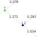

|  |
Ant System (AS)By Nik Swoboda |
A simulation of AS using the Extended Double Bridge graph and search for the shortest path as the testbed. All edges are considered to be of the same length, and each edge is desplayed with its current pheromone level.
The algorithm was implemented based upon the description in Ant Colony Optimization - Artificial Ants as a Computational Intelligence Technique by Dorigo, Birattari and Stützle; the graph comes from that appearing the book Ant Colony Optimization by Dorigo and Stützle.